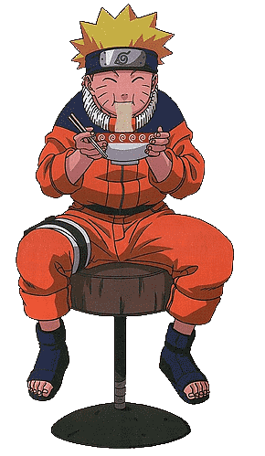

Ramen je vrh svoje popularnosti dostigao izlaskom animea nazvan Naruto, u kom glavni lik ne jede nista sem ramena. Mnogi gledaoci koji nikada nisu culi ni probali ramen pitali su se zasto je to jelo toliko posebno. To je izazvalo veliku radoznalost i zelju da se proba to ikonicno jelo. Ramen. Zbog velikog povecanja trazenosti ramena otvorili su se mnogi restorani sirom svijeta koji proizvode samo ramen.